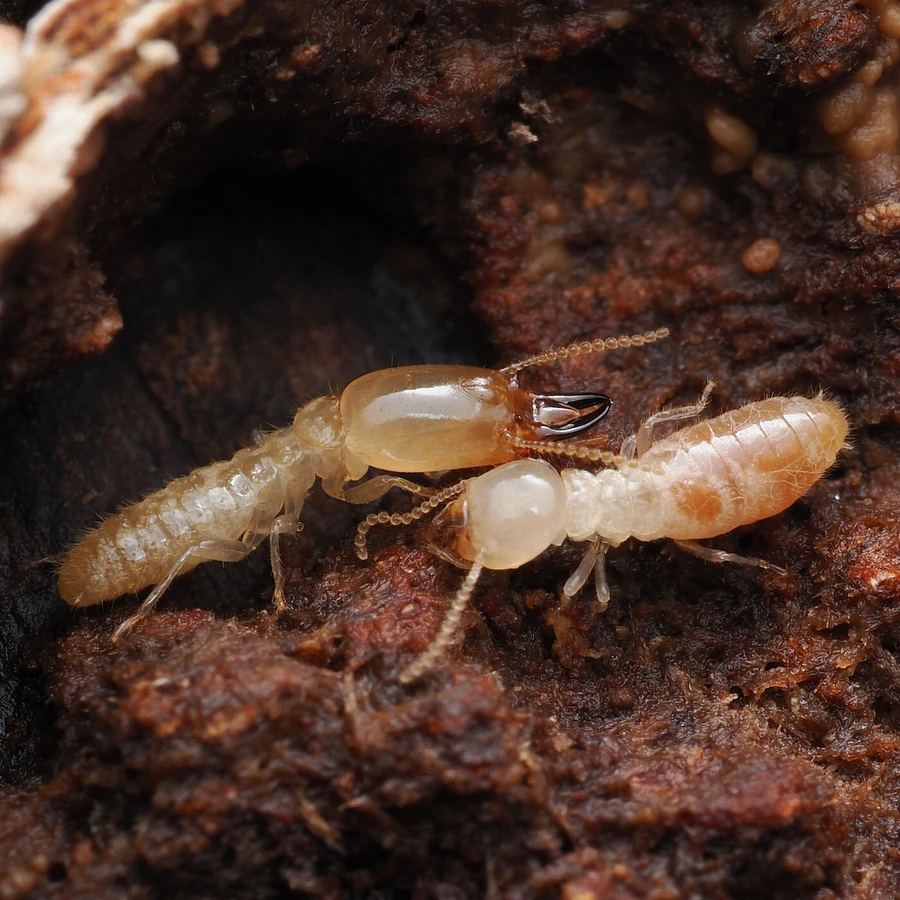

昆虫 · 动物界
黄胸散白蚁 Reticulitermes speratus

中国常见的散白蚁之一，工蚁体色浅黄，群体生活在木质构件和潮湿土壤中，是危害房屋木结构的白蚁种类。
- 分类
- 门节肢动物门纲昆虫纲目等翅目科鼻白蚁科属散白蚁属
- 栖息环境
- 房屋木构件、地板、门框、树桩和潮湿土壤中
- 地理分布
- 中国长江流域及以南地区，以及日本
- 保护级别
- IUCN 暂无评估；中国未列入国家重点保护名录
物种志
黄胸散白蚁工蚁体长 3–4 mm，体色乳白至浅黄，头部圆形，触角念珠状，没有翅；兵蚁上颚发达，头部呈黄色，负责防御。有翅繁殖蚁在春夏之交分飞，体色深褐，翅长超过身体，分飞后脱翅配对，寻找合适场所建立新群体。
它分布在中国长江流域及以南地区，也见于日本，喜欢温暖潮湿的环境，群体常生活在房屋木构件、地板、门框、树桩和潮湿土壤中，取食木材中的纤维素。散白蚁群体较小，没有明显的集中巢，常常多点危害，因此不易彻底清除，是白蚁防治中的难点。它属于等翅目昆虫，与蚂蚁的亲缘关系并不近；分飞期通常在 4–6 月的闷热傍晚。目前尚无保护评估，防治主要依靠监测、诱杀和化学屏障。
形态与习性
- 食性取食木材中的纤维素
- 体长工蚁 3–4 mm
- 识别工蚁乳白至浅黄，兵蚁头部黄色、上颚发达
- 繁殖春夏之交分飞，脱翅配对后建立新群体
- 习性群体较小，无集中巢，常多点危害
- 危害蛀食房屋木结构，是重要白蚁害虫
趣味知识
- 黄胸散白蚁没有明显的集中巢，往往在几处木构件同时造成危害。
- 每年 4–6 月的闷热傍晚，有翅繁殖蚁会成群分飞寻找配偶。
- 白蚁属于等翅目，和蚂蚁并不是近亲，分类上更接近蟑螂。